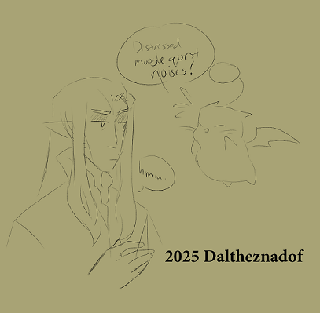

The day's events had gone so, so quickly. Therian barely had a moment to breath between the poisoning, the capture, then running and running and everyone just... everyone disappearing.
Shtola...
Thancred..
Minfillia running back, insisting the he just--
He tugs the borrowed coat closer. Nose burying down into the collar to combat the cold as he steps out of the intercessory.
The bitter wind helps a little to force his mind to focus as he walks up the steps to the battlements. Sitting the evening through with Raelinn, Tataru and Alphinaud had been doing little for his mood with everything that was whirling through his head. Raelinn was never much to talk about his emotions to. He certainly wasn't going to talk to the brooding runt... and Tataru... He passes the guards posted to the top of the battlements without a word, walking until he's alone.
Therian brushes the snow from one of the ledges before he leans on it. It pushes the chill into his hands. Settling into his bones. He sighs to himself. If he'd just done something different then... then what? It would have done worse to kill them. That would have just made it harder to clear their names. It would have made.... Just what happened back in the tunnels? Minfillia was called by the damned goddess and just... she never came out. They hadn't... He hadn't had a chance to talk to them before...
His head bows low, eyes hardly focused on the dark horizon of the Coerthan night. Night crawls by in ilms. With every inch of time passing, the wind picks up as it begins to snow. Therian hardly notices. The heat long leaving his body by the time someone comes to find him.
A sharp inhale. Body jerking when something touches his shoulders. Therian grips his hands tight. The crackle of a flame between his icy fingers for a moment only to let it fall.
"Calm down, my friend. It's only me," Haurchefant speaks in soft tones. He settles a heavy woolen blanket around Therian's shoulders. A guantleted hand brushes the long hair back from his face, the cool leather brushes the frozen tears from his cheek. "You'll freeze if you remain out overlong Therian."
Therian brushes the hand away. Were it not already pink from the weather, he'd have blushed. Despite himself, he tugs the blanket closer. Only now realizing how much he is shivering. He leans still against the ledge. Eyes scanning the horizon. A refusal to look at the man he'd been spending so much time with despite how much he told himself he despised the company. "What do you want Haurchefant?"
"Merely to check on you." Haurchefant lets his hand be brushed away. Instead, he leans beside Therian. His arm brushes against the other man's without being pulled away from. He smiles slightly. "You hold yourself together well enough in company, but you did not come across as yourself earlier... You will find your companions."
Ecca grits his teeth. He wants to bite and claw and just do something... Say something scathing to make himself feel better. Hollow words is all Haurchefant offered. That's how he felt when he spoke those words earlier. That's how he felt about them now. He doesn't do anything, unclenching his jaw and letting his body move on it's own.
Haurchefant blinks at the weight pressing into his side. Therian leans into him. It hurt to see his friend in such a state. He wraps his arm around Therian's shoulder, tugging the man closer. "Will you come in from the cold?"
The white fluffy floating creature was small. So very small and so very appetizing. They were supposed to move with it and keep it from being attacked... Keep it from harm while it showed the way. It was called a Moogle. The red ball attached to it's head looked almost like an apple.

Ecca can see why creatures would want to eat it. He wanted to take a bite out of it, but he needed to know where the King was and this was the only creature that knew how to get to that grove. He takes a glance down at Raelinn. Then a glance back up at the distressed creature as it keeps talking. His hand reaches out.
The moogle makes a loud squawk. It wiggles, complaining and yelling, struggling in Ecca's grasp. Ecca pushes the creature into his vest.
Raelinn looks up at him, squinting. "What are you doing?"
"This thing is going to get eaten. What do you think I'm doing?" Ecca huffs at her.